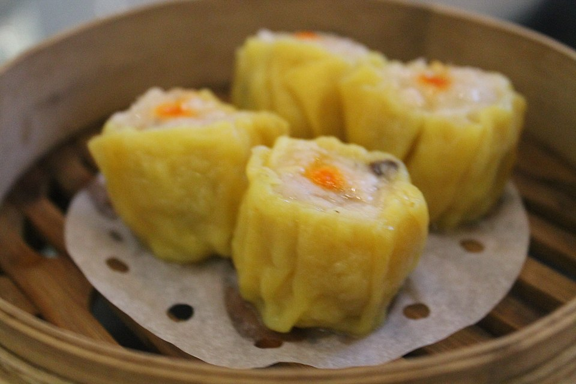

Home
Siomai Recipe

This delicious Chinese dumpling is something you can easily find in the streets of Manila, and many other places in the Philippines. What is it about this savory treat that makes it so irresistible? For starters, it has a great variety in flavor due to its use of shrimp, pork, onions and more tasty components.
Ingredients
- 3 lbs of ground pork
- 1 cup of minced shrimp
- 12 ml of Knorr liquid seasoning
- 2 teaspoons of sesame oil
- 1/2 teaspoon of salt
- 1/4 teaspoon of ground black pepper
- 1/2 cup of minced onion
- 1/2 cup of minced carrot
- 1/4 minced green onion
- 4 tablespoons of cornstarch
- 1 egg
- 50 pieces of wonton wrapper
Steps in cooking the siomai
- Mix some of the filling ingredients together
- Season the filling
- Wrap the filling
- Steam the wrapped filling
- Eat the siomai